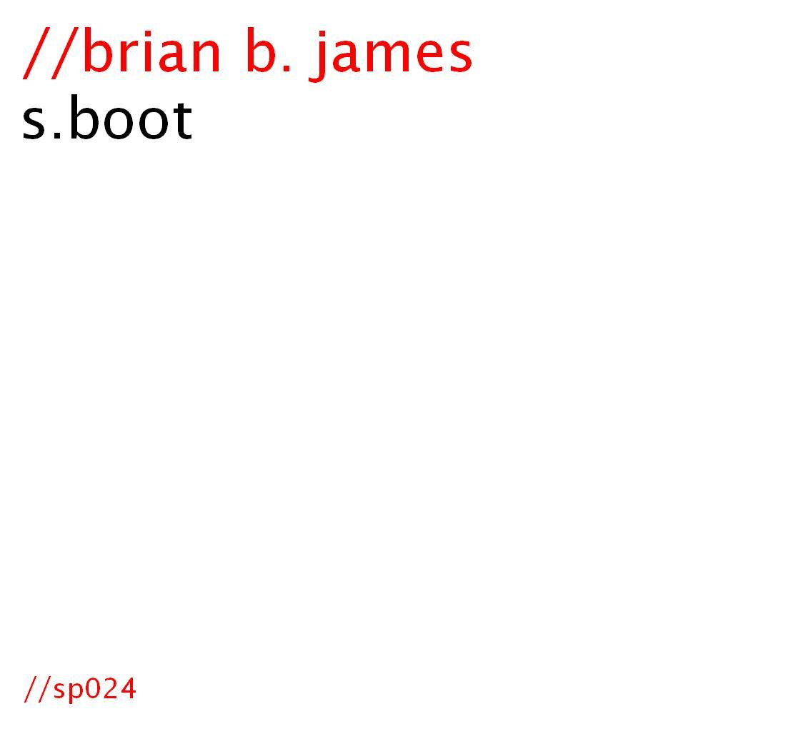

s.boot

s.boot. brian b. james. lp. sp024.
this is my version of an on-going, on-line, digital release. not yet full-length album in progress of SuperCollider-programmed computer music.
digital release only.
latest release: march 14, 2007
page still in progress........